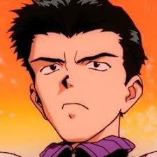

Toji
Camarade de classe de Shinji et « 4th Child ». Impulsif, il accuse Shinji d'avoir gravement blessé sa sœur durant l'attaque du Troisième Ange lors de leur première rencontre. Il est le meilleur ami de Kensuke Aida et finira par devenir également ami avec Shinji mais ne supporte pas Asuka. Il est très concerné par l’hospitalisation de sa petite sœur et accepte de devenir pilote pour qu'elle soit transférée dans un meilleur établissement. Il est cependant très gravement blessé dans son EVA lors de sa première utilisation.